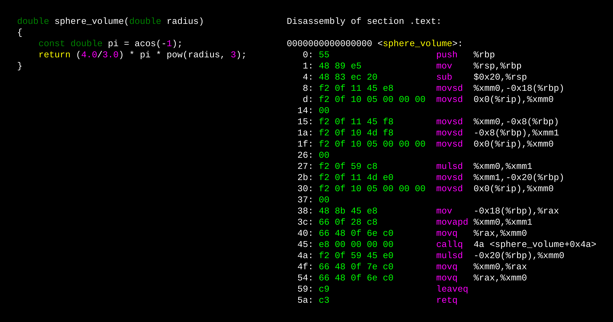

Introduction to C++#
Overview
Questions:
What is the difference between compiled and interpreted languages?
What are the main advantages of C++ vs python?
What are some similarities between python and C++?
Objectives:
Explain static and dynamic typing
Explain basic C++ structure and syntax, comparing/contrasting with python
Introduce compiling from the command line
Prerequisites
Some familiarity with common programming terms
Basic Python knowledge
C++ is a general-purpose, statically-typed, compiled programming language designed by Bjarne Stroustrup in the 1980s. It is generally used where performance is a concern, while still allowing for flexibility. These constraints can come at a cost, as C++ is widely considered to be a very deep and complex language.
C++ is generally thought of as a superset of C. That is, most C code is able to be compiled with a C++ compiler; this is not strictly true, however in practice most C code is portable to C++.
Versions of C++#
Like Python, C++ has several different versions (called standards). These standards are designed by a committee, with input from the community. The computational molecular sciences does have representation within the standards-making community, and members of CMS have made proposals to the committee.
By now, C++11 (released around 2011) is very common and a recommended base standard to use. C++14 adds some relatively minor updates and is also generally acceptable. C++17 is the most recent published standard, and C++20 is currently in development.
C++ standards are designed to be backwards compatible, so that, for example, C++11 code is acceptable C++17 code. However, new features can create a different ‘feel’ to the code, particularly when used side-by-side with older code.
C++11 is considered a turning point in the C++ language, with the previous release being C++98. Code written in C++11 or later style can look very different compared to older code due to the addition of very helpful features and paradigms. This is sometimes called “modern C++” although that phrase has no precise definition.
Compiled languages#
C++ is a compiled language. This means that the code you write is compiled into binary format by means of a compiler. This binary code is more directly interpretable by your computer’s processor without further need for translation. Compiling also allows for optimization not generally possible in interpreted languages such as Python, as the compiler can take into account an entire body of code.
The figure below shows a small C function for computing the volume of a sphere. On the right is the corresponding binary code (in green) that has been disassembled into a more human-readable format (purple and white).
In interpreted/dynamic languages such as Python, the translation from source code to binary happens implicitly when a line of code is used, whereas in compiled languages this only happens at compile time, allowing for much more performant programs.
C++ compilers can perform optimizations that interpreters generally cannot, because compilers can take a whole-file or even whole-program view of the code. This allows compilers to do do things such as
inline code (directly copy the machine code from one function to another)
remove unused code and variables
reorder operations so that they are more efficient
perform simple mathematical operations
Pycache files
Python does cache the results of interpreting code. That is what the
.pyc and __pycache__ directories are for.
There is a cost to compilation, though. In Python, for example, you may edit your code and then immediately run it to see what the effect of your change was. Compiled languages require the intermediate compilation step, resulting in a longer feedback loop between code modification and running or testing.
In addition, compiled code is relatively restricted on what machines or operating systems it can run, while interpreted code is often OS and platform agnostic (as long as the interpreter runs on that platform).
The Python Interpreter
The most commonly-used Python interpreter (CPython) is written in C. Why do you think that is?
Compilation and linking#
There are two steps to creating a program or library from source code: compiling and linking. It is common to use ‘compilation’ to mean both steps, although it may be technically incorrect; the word ‘building’ is also used to refer to a combination of compiling and linking. Everything is even more confusing as compilers will often call the linkers for you, often by default.
Compilation refers to the transformation of source code files to machine code,
as shown in the figure above. Then, the linker combines all the compiled
data (including external libraries) into a single library or executable.
There are several different compilers that you may run across. These include the GNU Compiler Collection (GCC), Clang, and Intel compilers.
Complex projects are often compiled/linked with a build system (such as CMake). These build systems can simplify building software with lots of interconnected pieces, even written in multiple programming languages. A discussion of build systems is beyond the scope of these lessons; our code can be build with a few commands, possibly saved inside a shell script.
Static typing#
One major difference between Python and C++ is that C++ is statically-typed. This means that variables are given a type and once that type is set, it cannot change.
In C/C++, the types of variable is given before the variable name
int i = 10;
std::string s = "Hello";
Types in Python
Python does have types, although they are not declared the same way as in C++, and are often determined implicitly at runtime.
Try running the following in a Jupyter notebook or Python script:
a = "This is a string"
print(type(a))
b = 10
print(type(b))
Once set, a variable’s type cannot be changed. For example, the following python code is valid:
def hello_world():
to_print = "Hello, world!" # to_print is a str
print(to_print)
to_print = 12345; # to_print is now an int
print(to_print)
But an equivalent C++ code is not valid
void hello_world()
{
std::string to_print = "Hello, world!"; // OK
to_print = 10; // Error: Assigning an integer to a string type
int to_print = 10; // Error: to_print is already delcared to be a string!
}
Some types can be implicitly converted (such as between int and double). This can be
the source of bugs, and compilers can be made to warn about such conversions.
Discussion
The benefits of static typing have been long debated. Why would static typing be beneficial? What are the drawbacks?
Basic C++ Syntax#
The syntax of C++ can look similar to that of python, with a few differences.
Single-line comments start with
//. Multi-line comments start with/*and end with*/Whitespace is not significant
Statements end with a semicolon (
;)Rather than whitespace, statements are grouped together with curly braces
A type is specified before the first use of a variable (including in a function argument)
The return type of a function is specified before the function name; the function must return an object of that type and only that type.
Here is the function for calculating the volume of a sphere in both Python and C++. Don’t worry if you don’t understand all the differences - we will explain more as the course goes on.
#include <cmath>
double sphere_volume(double radius)
{
double pi = acos(-1);
return (4.0/3.0) * pi * pow(radius, 3);
}
import math
def sphere_volume(radius)
{
pi = math.acos(-1);
return (4.0/3.0) * pi * radius**3;
}
A note about source files and functions#
In python, an entire .py file is ‘run’ by the interpreter. Statements (assignments, loops,
function calls, etc) can exist anywhere in that file.
In C++, on the other hand, only functions can be run. Therefore, any code/logic must be inside a function (or class).
There are some exceptions to this, but in general, very nearly all logic goes into functions in C++.
For example, the following is a valid python .py file
for i in range(10):
print(i)
def fun(x):
if x < 100:
return True
else:
return False
but the corresponding C++ file is not valid
#include <iostream>
for(int i = 0; i < 10; i++)
{
std::cout << i << std::endl;
}
bool fun(int x)
{
if(x < 100)
return true
else
return false
}
Mapping between C++ and Python types#
Some common C++ types and their similar types in python are given in the table below. Please note, however, that these are only rough equivalences and there are many nuances not captured here.
C++ Type |
Python Type |
Description |
|---|---|---|
bool |
bool |
True/False |
int |
int |
Integer number (not floating point) |
double |
float |
Floating point number (64-bit) |
std::string |
str |
String of characters |
std::vector |
list |
List/array of data |
std::map |
dict |
Key/Value association |
Key Points
C++ is a statically-type language that involves compiling code
C++ has some superficial similarity to python